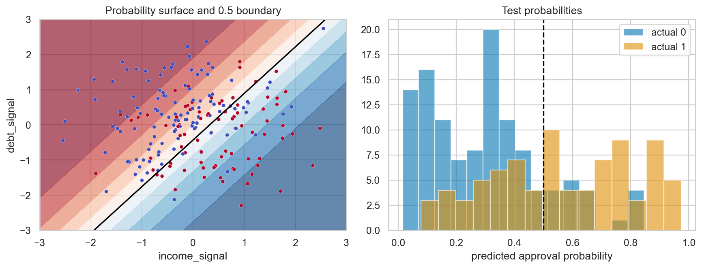

ML Hands-on Lab · 01 — Linear and generalized linear
Logistic regression
1. The one-sentence version
Logistic regression adds feature evidence on the log-odds scale and turns that score into a probability between zero and one.
2. The intuition
Treat each feature as adding or subtracting points from a scorecard. The sigmoid bends any score into a valid probability while preserving order.
A five-item example
Scores [−2,−1,0,1,2] become probabilities about [0.12,0.27,0.50,0.73,0.88] through 1/(1+e⁻ˢ). A one-unit score increase multiplies the odds by e≈2.72.
3. The maths in plain English
\[p(y=1\mid x)=\sigma(\beta_0+x^T\beta)=\frac{1}{1+e^{-(\beta_0+x^T\beta)}}\]
xᵀβ is the weighted score. A larger positive coefficient raises log-odds; exp(β) is the odds multiplier for one unit. The sigmoid prevents probabilities below zero or above one.
4. What the model is actually doing during training
- Standardize each feature using training statistics.
- Form intercept + weighted feature sum for every row.
- Convert scores to probabilities with the sigmoid.
- Adjust coefficients to reduce log loss; freeze them before test.
5. The knobs
| Knob | Too low | Too high |
|---|---|---|
| C | Strong regularization flattens useful effects. | Weak regularization can chase noise. |
| Decision threshold | More positives and false alarms. | More missed positives. |
| Interaction features | Important combinations are missed. | Many speculative terms raise variance. |
6. Assumptions and failure modes
Observations should match the deployment population and log-odds should be reasonably additive in the supplied features. Complete separation can make coefficients unstable. A well-calibrated historical probability can still drift when prevalence changes.

7. Code
Minimal version
from sklearn.linear_model import LogisticRegression
model = LogisticRegression(max_iter=1000, random_state=0)
model.fit(X_train, y_train)
probability = model.predict_proba(X_test)[:, 1]Realistic version
from sklearn.pipeline import make_pipeline
from sklearn.preprocessing import StandardScaler
from sklearn.linear_model import LogisticRegressionCV
model = make_pipeline(StandardScaler(), LogisticRegressionCV(
Cs=10, cv=5, scoring="neg_log_loss", max_iter=2000, random_state=0
))
model.fit(X_train, y_train)8. Where it's actually used
- Regulated credit scorecards where effects must be defensible.
- Hospital risk flags with calibrated probabilities.
- Subscription churn baselines before more complex models.
- Manufacturing defect odds from measured process settings.
9. How it relates to its neighbours
It is a generalized linear model with Bernoulli likelihood and logit link. Linear SVM also draws a straight boundary but optimizes margin rather than probability likelihood. Naive Bayes reaches a linear boundary under different distribution assumptions.